Deep Learning Architectures Comparative Analysis
- Overview
- Fully connected networks
- Convolutional Neural Networks
- Recurrent Neural Networks
- Transformers
- Inductive bias
- References
- Citation
Overview
- This article will dive deeper into nuances and differences between supervised deep learning architectures.
- Supervised deep learning is when the output we want to predict is clearly labelled in the data that we’ve used in training.
- Feel free to utilize it to further your understanding or on your interview journey!
- Please let me know if you’d like to see anything else here.
Fully connected networks
- A Fully Connected Network (FCN) consists of a series of fully connected layers that connect every neuron in one layer to every neuron in the other layer.
- The major advantage of fully connected networks is that they are “structure agnostic” i.e. there are no special assumptions needed to be made about the input.
- While being structure agnostic makes fully connected networks very broadly applicable, such networks do tend to have weaker performance than special-purpose networks tuned to the structure of a problem space.
- The following diagram (source) shows a Multilayer Deep Fully Connected Network: 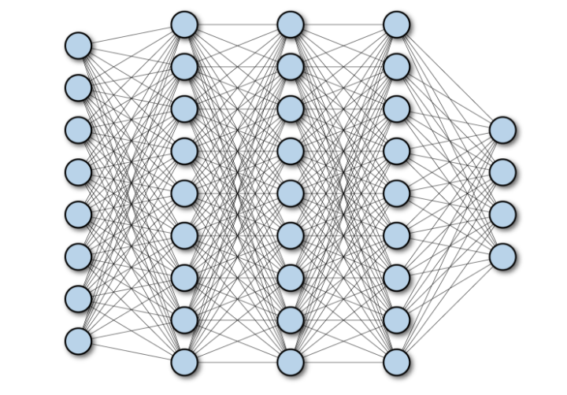
Convolutional Neural Networks
- A Convolutional Neural Network (CNN) is a multilayer neural network architecture which is primarily used in image-processing applications. CNN architectures make the explicit assumption that the input has a spatial dimension (along with an optional depth dimension) such as images, which allows encoding certain properties into the model architecture.
- Yann LeCun created the first CNN where the architecture was focusing on recognizing handwritten characters.
- Let’s break down the technical details on a computer vision model using CNN:
- Input to the model:
- The input for a CNN model is usually an image or text. CNN’s can be used for text but are frequently not. 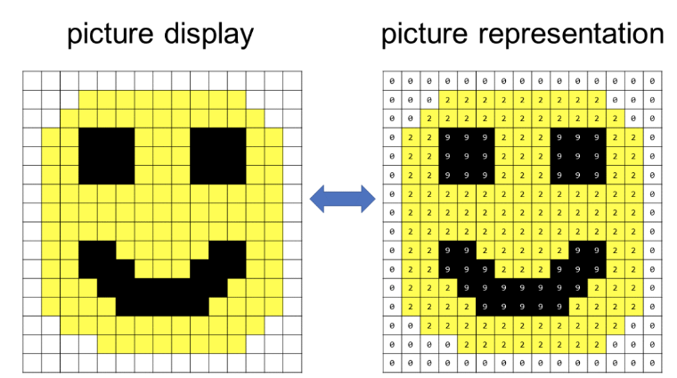
- Image here is represented as a grid of pixels (grid of positive whole numbers where each number is assigned a color).
- Output of the model:
- The output of the model depends on what it was trying to predict, the examples below represent a few common tasks: 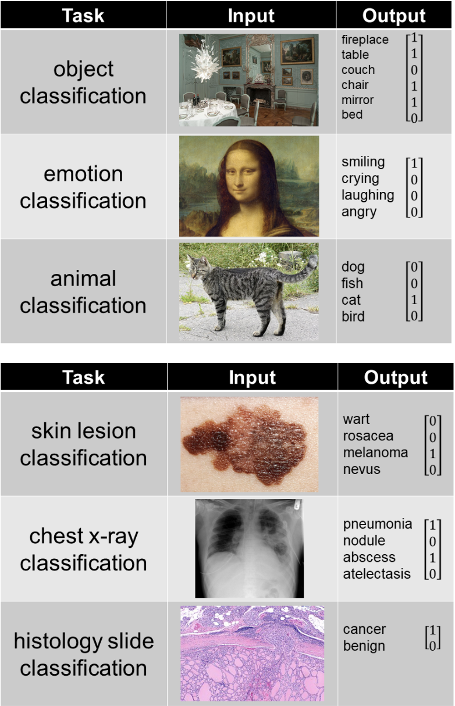
- A simple CNN is a sequence of layers, and every layer of a CNN transforms one volume of activations to another through a differentiable function. Three main types of layers are used to build CNN architecture: Convolutional Layer, Pooling Layer, and Fully-Connected Layer. The following diagram shows the different parts of a CNN layer:
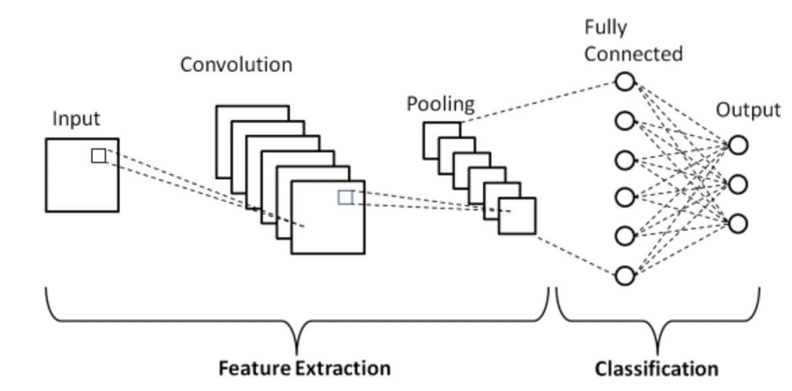
- Convolution: The convolution filters scan the image and then the convolution operation uses either addition and multiplication.
- CNN tries to learn the values in the convolutional filters to be able to predict the desired output.
- Nonlinearity: This is an equation used on the convolutional filter. It allows the CNN to learn complicated relationships between input and output images.
- Pooling: Also known as “max pooling”, it is just choosing the biggest number out of a range of numbers. It helps in reducing the size of the representation and reduces the amount of computations the CNN has to take. Helps in efficiency.
- These aforementioned three operations combined make a fully convolutional network.
- Convolution: The convolution filters scan the image and then the convolution operation uses either addition and multiplication.
- Input to the model:
Use-cases of CNNs
- CNNs are commonly used in solving problems related to spatial data, such as images (2D CNNs) and audio (1D CNNs).
- Use cases for CNNs include facial recognition, medical analysis and classification.
Pros of CNNs compared to FCNs
- Parameter sharing/Computational tractability: Since CNNs utilize parameter sharing, the number of weights for a CNN vs. FCN architecture typically have several orders of magnitude difference.
- For the fully connected neural network you have an input of shape \((H_{in} \times W_{in} \times C_{in})\) and the output of shape \((H_{out} \times W_{out} \times C_{out})\). This means, that each color of the pixel of the output feature map is connected to every color of the pixel from the input feature map. There is a separate learnable parameter for each pixel in the input image and the output. Hence, one gets this huge number of parameters : \((H_{in} \times H_{out} \times W_{in} \times W_{out} \times C_{in} \times C_{out})\)
- In the convolutional layer the input is the image of shape \((H_{in}, W_{in}, C_{in})\) and the weights account for the neighborhood of the given pixel, say of size \(K \times K\). The output is obtained as a weighted sum of the given pixel and its neighborhood. There is a separate kernel for each pair of the input and output channel \((C_{in}, C_{out})\), but the weights of the kernel (a tensor of shape \((K, K, C_{in}, C_{out})\) are independent of the location. Actually, this layer can accept images of any resolution, whereas, the fully connected can work only with a fixed resolution. Finally one has \((K, K, C_{in}, C_{out})\) parameters, which for the kernel size K much smaller, than the input resolution result into significant drop in the number of variables.
- The sole fact that since AlexNet won ImageNet competition, every neural network that wins it uses CNN component, should be enough to convince you that CNNs are better for image data.
- You most likely won’t be able to find any meaningful comparison, since CNNs are able to handle image data that is infeasible using only FC layers.
- Why?
- The number of weights in FC layer with 1000 neurons for \(224 \times 224 \times 3\) image is something like 150M. That’s 150M for only one layer.
- If you’re not convinced this is a huge number, then note that modern CNN architectures that have 50-100 layers while having overall couple dozen million parameters (for example ResNet50 has 23M params, InceptionV3 has 21M parameters).
- Mathematically, let’s compare the number of weights between CNNs and FCNs (with 100 hidden units) for an input image of shape \(500 \times 500 \times 3\):
- FC layer = Wx = \(100 \times (500 \times 500 \times 3) = 100 \times 750000 = 75M\).
- CNN layer =
((shape of width of the filter * shape of height of the filter * number of filters in the previous layer+1)*number of filters)(note that the+1is for bias) = \((F_w \times Fh \times D + 1 ) \times F = (5 \times 5 \times 3 + 1 )*2 = 152\).
- Translation invariance: Invariance refers to the ability to remember an object as an object even though its object place changes. This is usually a positive thing because it maintains the object’s identity (category). Note that translation here has a specific meaning in vision, borrowed from geometry. The following figure shows The the same object in different locations (note that a CNN would recognize both as cats owing to translation invariance).
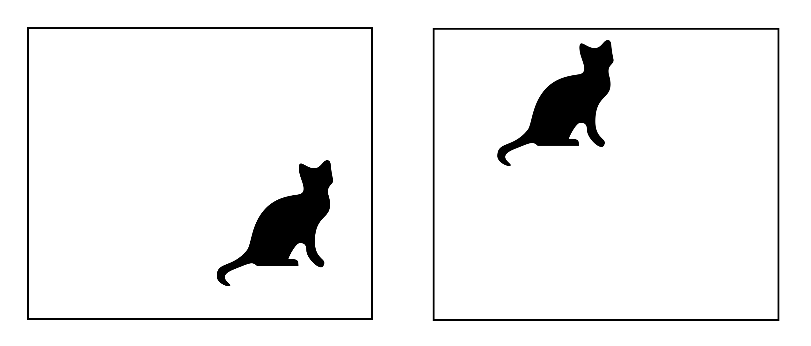
Recurrent Neural Networks
- RNNs are one of the foundational network architectures that are leveraged in building other deep learning architectures.
-
However, one key different is that unlike normal feed-forward networks, RNN can have connections that feed back to its prior or same layer. In a way, RNNs have “memory” over previous computations and use this information in current processing.
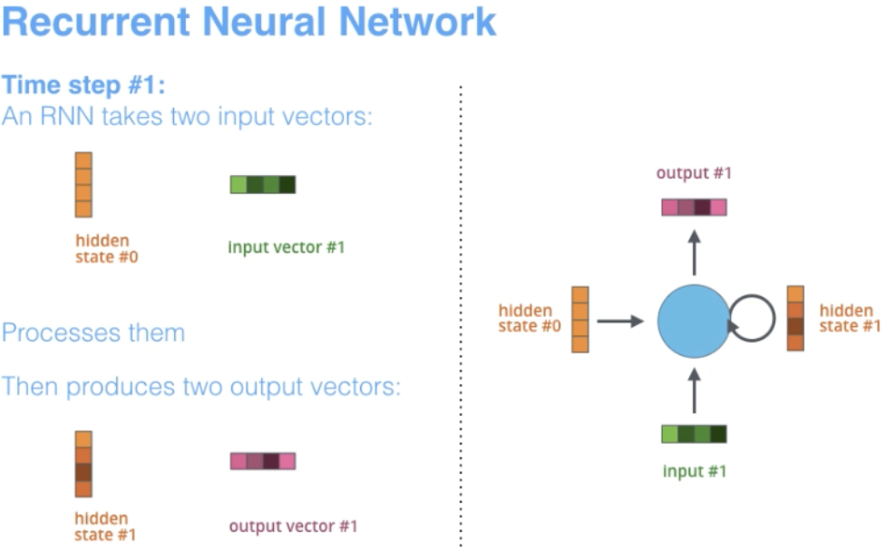
- The term “recurrent” applies as the network performs the same task over each instance of the sequence such that the output is dependent on the previous computations and results.
- RNNs are naturally suited for many NLP tasks such as language modeling.
- They are able to capture the difference in meaning between “dog” and “hot dog” and thus, RNNs are tailor-made for modeling such context dependencies in language and similar sequence modeling tasks.
- This has resulted to be a strong motivation for researchers to use RNNs over CNNs in these areas.
- Another advantage of RNNs is that the model size does not increase with the size of input, thus we have the possibility of processing inputs of any length.
- Additionally, unlike CNNs, RNNs have flexible computational steps that provide better modeling capability and create the possibility to capture unbounded context since it takes into account historical information and its weights are shared across time.
- However, RNNs suffer from a vanishing gradient problem. The gradient becomes small and thus, makes the updated weights for backpropogation very small.
- Another pitfall we with RNNs is that they are slow to train (due to sequential processing of each token) and sometimes difficult to converge (due to vanishing/exploding gradients).
-
Below we will see architecture illustrations of RNNs used for various applications provided by Stanford.
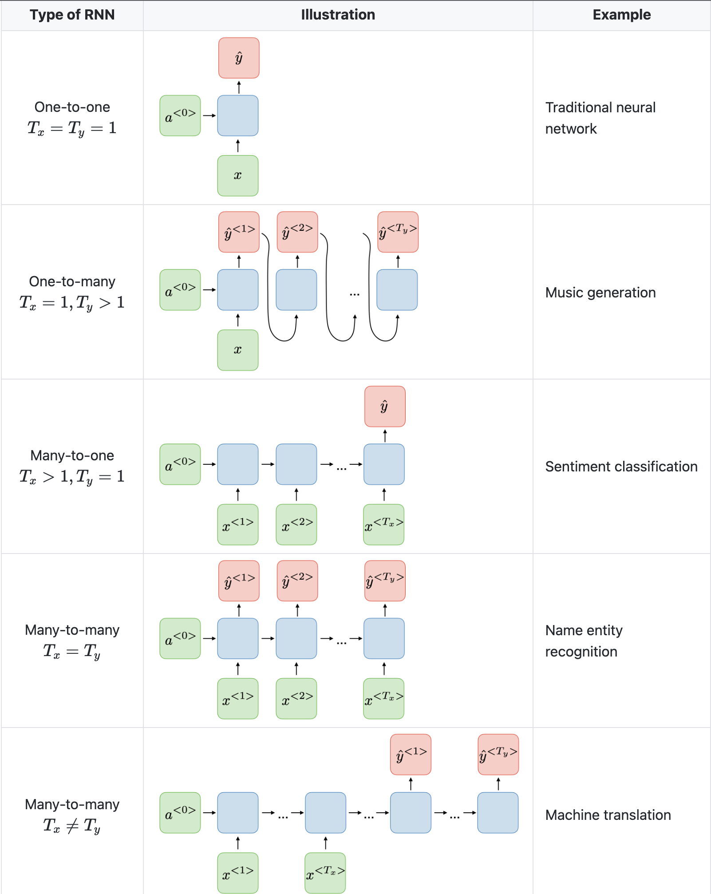
- Note that a CNN has a different architecture from an RNN. CNNs are a type of feed-forward neural networks that use filters and pooling layers, whereas RNNs feed results back into the network (in an auto-regressive manner).
Use-cases of RNNs
- RNNs are better suited to analyzing temporal, sequential data, such as text or videos.
- Use cases for RNNs include text translation, natural language processing, sentiment analysis and speech analysis.
Pros of RNNs vs. CNNs
- In CNNs, the size of the input and the resulting output are fixed. That is, a CNN receives images of fixed size and outputs them to the appropriate level, along with the confidence level of its prediction. In RNNs, the size of the input and the resulting output may vary (this feature lends itself to applications where variable size input and output is needed, say in generating text).
Vanishing Gradient problem solutions
- Both Gated Recurrent Units (GRU) and Long Short-Term Memory units (LSTM) provide a solution to the vanishing gradient problem that RNNs experience.
- Let’s delve into each a little deeper, below.
Gated Recurrent Units (GRU)
- GRUs have two gates, its missing the output gate present in LSTMs which we saw up above.
- GRU uses these two gates, update and reset (which are essentially two vectors), to decide what information should be passed to the output.
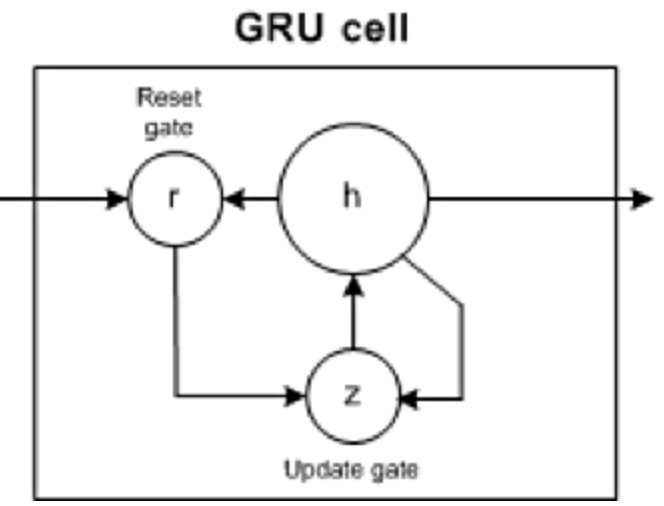
- Reset gate: helps the model to decide how much of the past information can be forgotten.
- Update gate: helps the model in determining how much of the past information (previous time steps) needs to be passed along to the future.
Pros of GRUs compared to LSTMs and RNNs
- Just like RNNs, they are able to keep information for a long time and capture longer range dependencies than RNNs.
- However, unlike LSTMs, GRUs are simpler and can be trained more quickly.
Cons of GRUs compared to LSTMs and RNNs
- More parameters compared to RNNs owing to two gates (vs. none in RNNs).
- Typically cannot capture longer range dependencies than LSTMs.
Long-Short Term Memory (LSTM) Cells
- Long-Short Term Memory (LSTM) cells are a special kind of RNN that make it easier for RNNs to preserve information over many timestamps by learning long term dependencies.
-
Below we can see a visual representation of the LSTM architecture provided from CS224N’s lectures.
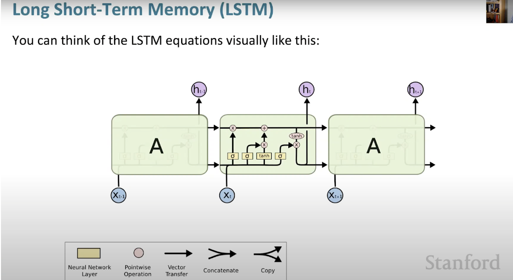 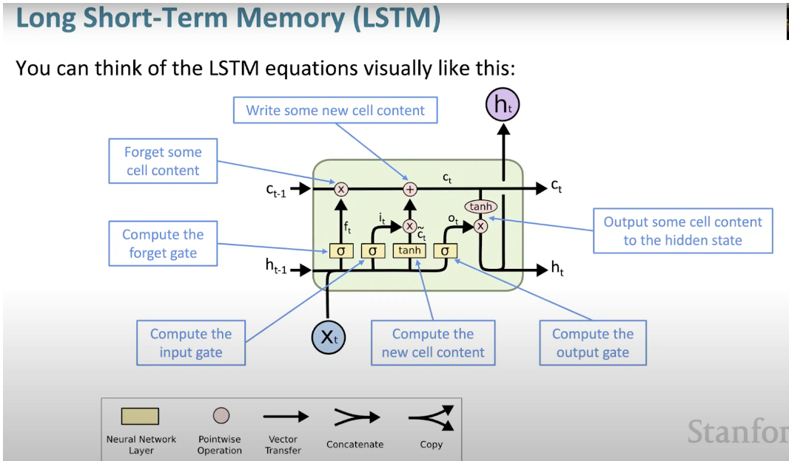
- LSTMs are ubiquitous, and can be found in many applications or products we use such as smartphones.
- What makes LSTM such a powerhouse is that it departed from the typical neuron-based architecture and instead employed the concept of a memory cell.
- This memory cell retains its value for a short or long time as a function of its input. This allows the cell to remember what’s important and not just the last computed value.
- The LSTM memory cell contains three gates that control the information flow in or out of its cell.
- Input gate:
- The input gate controls when information can flow into the memory. 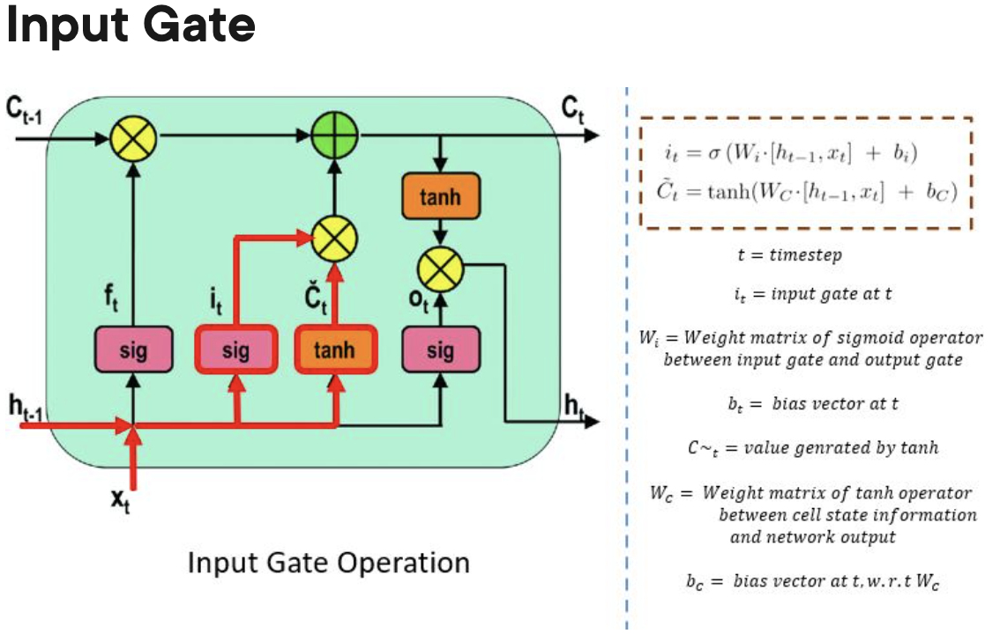
- Forget gate:
- The forget gate is responsible for keeping track of which information can be “forgotten”, making room for the cell to remember new data.
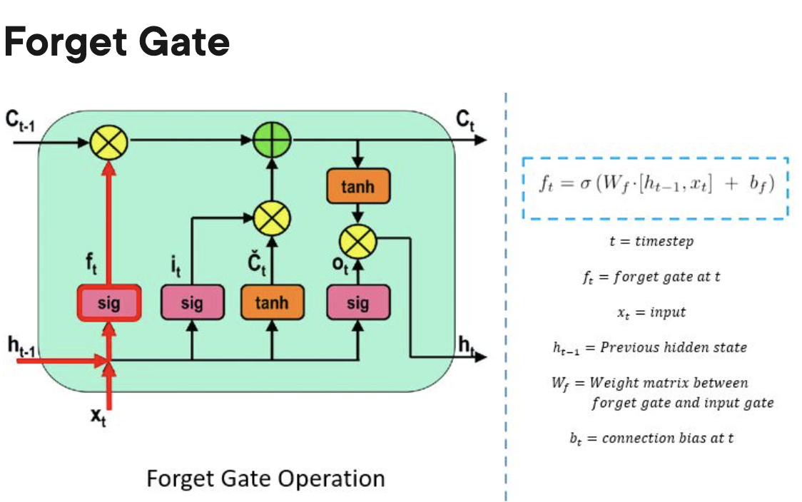
- Output gate:
- The output gate decides when the information that the cell has stored inside, can be used as the output of the cell.
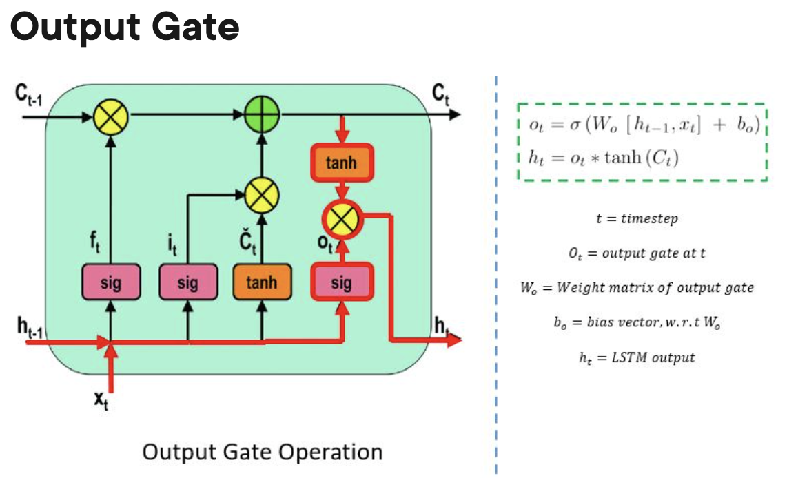
- Input gate:
Pros of LSTMs compared to GRUs and RNNs
- Can learn longer term dependencies compared to GRUs and especially RNNs.
Cons of LSTMs compared to GRUs and RNNs
- More parameters compared to RNNs and GRUs owing to three gates (vs. two in GRUs and none in RNNs).
Transformers
- The Transformers paper, “Attention is All You Need, is the [#1 all-time paper on Arxiv Sanity Preserver].
-
As shown below, Transformers are big encoder-decoder models able to process a whole sequence with a sophisticated attention mechanism. 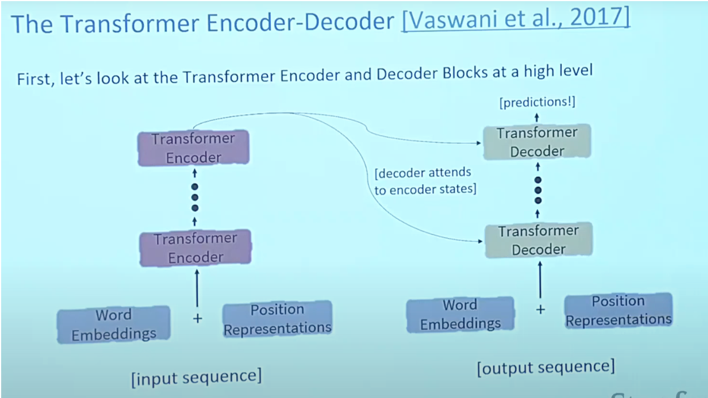
- As is the case in NLP applications in general, we begin by turning each input word into a vector using an embedding algorithm.
- The embedding only happens in the bottom-most encoder. The abstraction that is common to all the encoders is that they receive a list of vectors each of the size 512 – In the bottom encoder that would be the word embeddings, but in other encoders, it would be the output of the encoder that’s directly below.
- The size of this list is a hyperparameter we can set – basically it would be the length of the longest sentence in our training dataset.
- Attention:
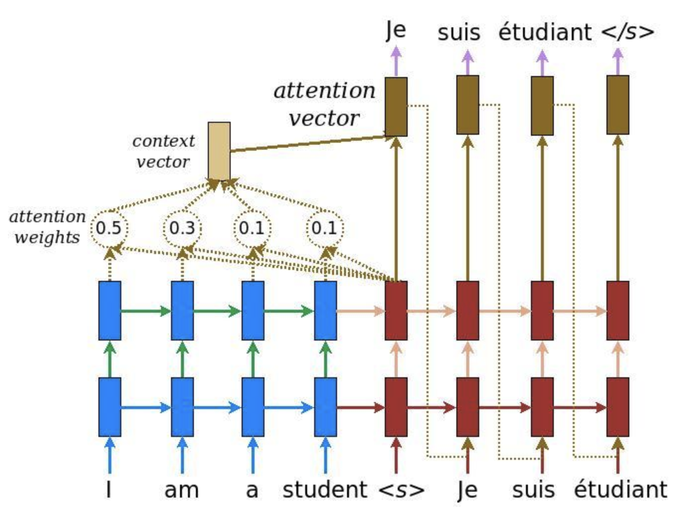
- Attention provides a solution to the bottleneck problem.
- Bottleneck problem: The context vector turned out to be a bottleneck for these types of models. It made it challenging for the models to deal with long sentences.
- Attention allows the model to focus on the relevant parts of the input sequence as needed.
- Attention treats each words representation as a query to access and incorporate information from a set of values.
- Per usual, in the transformer architecture, the encoder is able to pass all the hidden states to the decoder.
- However, before producing its output, with attention, the decoder does an extra step. The decoder multiplies each hidden state by its softmax score, thus amplifying hidden states with higher scores and drowning out the rest.
- This allows the model to focus on the parts of the input that are relevant to the output.
- Self Attention is in the encoder. Now lets look at the technical details:
- First step is to create 3 vectors from each of the encoders input vectors(embeddings of each word)
- Key, query, value vectors
- These vectors are created by multiplying the embedding by 3 matrices that we trained during the training process
- K, V, Q dimension is 64 while embedding and encoder input/output vectors have dimension of 512
- First step is to create 3 vectors from each of the encoders input vectors(embeddings of each word)
- The image below, take from Jay Alammar’s Illustrated Transformer is the best visualization for this.
- Attention provides a solution to the bottleneck problem.
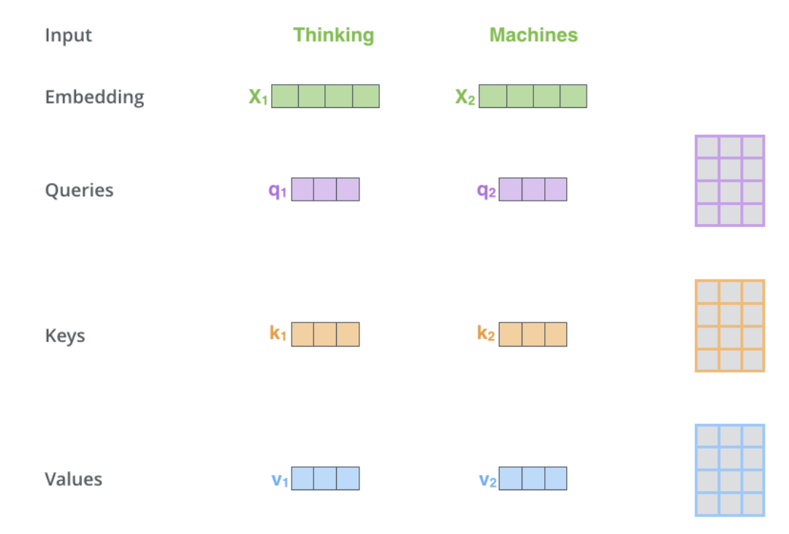
- What are query, key and value vectors?
-
They are abstractions that are useful for calculating and thinking about attention
-
Cross attention is in the decoder:
- Except for inputs, cross-attention calculation is the same as self-attention.
- Cross-attention combines asymmetrically two separate embedding sequences of same dimension, in contrast self-attention input is a single embedding sequence.
-
- In order to talk about Transformer, we also have to talk about, two pretrained models which are, BERT and GPT as it led to its success.
- GPT:
- Pretrained decoder with 12 layers.
- 768 dimensional hidden states, 3072 dimensional feed forward hidden layers
- Byte pair encoding with 40,000 merges
- Use case:
- In natural language inference: label pairs of sentences as entailing or contradictory or neutral.
- BERT:
- Pretrained Encoder that uses masked language modeling which replaces some fraction of words in the input with a special [MASK] token and then tries to predict these words.
- Thus, you only need to take loss on the masked words that were predicted.
- Comes in two flavors: BERT-base and BERT-large.
- Both BERT model sizes have a large number of encoder layers (which the paper calls Transformer Blocks) – twelve for the Base version, and twenty four for the Large version. These also have larger feedforward-networks (768 and 1024 hidden units respectively), and more attention heads (12 and 16 respectively) than the default configuration in the reference implementation of the Transformer in the initial paper (6 encoder layers, 512 hidden units, and 8 attention heads).
- Very easy to finetune and is common to do on a single GPU.
- Use case:
- In NLP for translation, especially low-resource language translations.
- GPT:
- A few disadvantages of Transformers are that they have quadratic compute time in self attention whereas, as we saw earlier, RNNs only grew linearly.
- This is a very brief overview of transformers, for an in-depth discourse on Transformers, it is highly recommend to check out Aman’s blog on Transformer.
Use-cases of Transformers
Language
- In a vanilla language model, for example, nearby words would first get grouped together. The transformer, by contrast, runs processes so that every element in the input data connects, or pays attention, to every other element. This is referred to as “self-attention.” This means that as soon as it starts training, the transformer can see traces of the entire data set.
- Before transformers came along, progress on AI language tasks largely lagged behind developments in other areas. Infact, in this deep learning revolution that happened in the past 10 years or so, natural language processing was a latecomer and NLP was, in a sense, behind computer vision, per the computer scientist Anna Rumshisky of the University of Massachusetts, Lowell.
- However, with the arrival of Transformers, the field of NLP has received a much-needed push and has churned model after model that have beat the state-of-the-art in various NLP tasks.
- As an example, to understand the difference between vanilla language models (based on say, a recurrent architecture such as RNNs, LSTMs or GRUs) vs. transformers, consider these sentences: “The owl spied a squirrel. It tried to grab it with its talons but only got the end of its tail.” The structure of the second sentence is confusing: What do those “it”s refer to? A vanilla language model that focuses only on the words immediately around the “it”s would struggle, but a transformer connecting every word to every other word could discern that the owl did the grabbing, and the squirrel lost part of its tail.
Vision
In CNNs, you start off being very local and slowly get a global perspective. A CNN recognizes an image pixel by pixel, identifying features like corners or lines by building its way up from the local to the global. But in transformers, with self-attention, even the very first layer of information processing makes connections between distant image locations (just as with language). If a CNN’s approach is like starting at a single pixel and zooming out, a transformer slowly brings the whole fuzzy image into focus.
- CNNs work by repeatedly applying filters on local patches of the input data, generating local feature representations (or “feature maps”) and incrementally increase their receptive field and build up to global feature representations. It is because of convolutions that photo apps can organize your library by faces or tell an avocado apart from a cloud. Prior to the transformer architecture, CNNs were thus considered indispensable to vision tasks.
- With the Vision Transformer (ViT), the architecture of the model is nearly identical to that of the first transformer proposed in 2017, with only minor changes allowing it to analyze images instead of words. Since language tends to be discrete, a lot of adaptations were to discretize the input image to make transformers work with visual input. Exactly mimicing the language approach and performing self-attention on every pixel would be prohibitively expensive in computing time. Instead, ViT divides the larger image into square units, or patches (akin to tokens in NLP). The size is arbitrary, as the tokens could be made larger or smaller depending on the resolution of the original image (the default is 16x16 pixels). But by processing pixels in groups, and applying self-attention to each, the ViT could quickly churn through enormous training data sets, spitting out increasingly accurate classifications.
- In Do Vision Transformers See Like Convolutional Neural Networks?, Raghu et al. sought to understand how self-attention powers transformers in vision-based tasks.
Multimodal Tasks
- Compared to the Transformer, other architectures are “one trick ponies” while multimodal learning requires handling of modalities with different patterns within a streamlined architecture with a reasonably high relational inductive bias to even remotely reach human-like intelligence. In other words, we needs a single versatile architecture that seamlessly transitions between senses like reading/seeing, speaking, and listening.
- The potential to offer a universal architecture that can be adopted for multimodal tasks (that requires simultaneously handling multiple types of data, such as raw images, video and language) is something that makes the transformer architecture unique and popular.
- Because of the siloed approach with earlier architectures where each type of data had its own specialized model, this was a difficult task to accomplish. However, transformers offer an easy way to combine multiple input sources. For example, multimodal networks might power a system that reads a person’s lips in addition to listening to their voice using rich representations of both language and image information.
- With cross-attention where the query, key and value vectors are derived from different sources, transformers are able to lend themselves as a powerful tool for multimodal learning.
- The transformer thus offers be a big step toward achieving a kind of “convergence” for neural net architectures, resulting in a universal approach to processing data from multiple modalities.
Benefits of Transformers compared to RNNs/GRUs/LSTMs
- The Transformer can learn longer-range dependencies than RNNs and its variants such as GRUs and LSTMs.
- The biggest benefit, however, comes from how the Transformer lends itself to parallelization. Unlike an RNN which processes a word at each time step, a key property of the Transformer is that the word at each position flows through its own path in the encoder. There are dependencies between these paths in the self-attention layer (since the self-attention layer computes how important each other word in the input sequence is to this word). However, once the self-attention output is generated, the feed-forward layer does not have those dependencies, and thus the various paths can be executed in parallel while flowing through the feed-forward layer. This is an especially useful trait in case of the Transformer encoder which can process each input word in parallel with other words after the self-attention layer. This feature, is however, not of great importance for the decoder since it generates one word at a time and thus does not utilize parallel word paths.
Drawbacks of Transformers compared to RNNs/GRUs/LSTMs
- The runtime of Transformer architecture is quadratic in the length of the input sequence, which means it can be slow when processing long documents or taking characters as inputs. In other words, computing all pairs of interactions during self-attention means our computation grows quadratically with the sequence length, i.e., \(O(T^2 d)\), where \(T\) is the sequence length, and \(d\) is the dimensionality. Note that for recurrent models, it only grew linearly!
- Say, \(d = 1000\). So, for a single (shortish) sentence, \(T \leq 30 \Rightarrow T^{2} \leq 900 \Rightarrow T^2 d \approx 900K\). Note that in practice, we set a bound such as \(T=512\). Imagine working on long documents with \(T \geq 10,000\)!?
- Wouldn’t it be nice for Transformers if we didn’t have to compute pair-wise interactions between each word pair in the sentence? Recent studies such as:
- Synthesizer: Rethinking Self-Attention in Transformer Models
- Linformer: Self-Attention with Linear Complexity
- Rethinking Attention with Performers
- Big Bird: Transformers for Longer Sequences
- … show that decent performance levels can be achieved without computing interactions between all word-pairs (such as by approximating pair-wise attention).
- Compared to CNNs, the data appetite of transformers is obscenely high. CNNs are still sample efficient, which makes them great candidates for low-resource tasks. This is especially true for image/video generation tasks where an exceptionally large amount of data is needed, even for CNN architectures (and thus implies that Transformer architectures would have a ridiculously high data requirement). For example, the recent CLIP architecture by Radford et al. was trained with CNN-based ResNets as vision backbones (and not a ViT-like transformer architecture). While transformers do offer accuracy bumps once their data requirement is satisfied, CNNs offer a way to deliver decent accuracy performance in tasks where the amount of data available is not exceptionally high. Both architectures thus have their usecases.
- The runtime of the Transformer architecture is quadratic in the length of the input sequence. Computing attention over all word-pairs requires the number of edges in the graph to scale quadratically with the number of nodes, i.e., in an \(n\) word sentence, a Transformer would be doing computations over \(n^{2}\) pairs of words. This implies a large parameter count (implying high memory footprint) and thereby high computational complexity.
- High compute requirements has a negative impact on power and battery life requirements, especially for portable device targets.
- Overall, a transformer requires higher computational power, more data, power/battery life, and memory footprint, for it to offer better performance (in terms of say, accuracy) compared to its conventional competitors.
Inductive bias
-
Every ML algorithm used in practice, from nearest neighbors to gradient boosting machines, comes with its own set of inductive biases about what classifications (or functions, in the case of a regression problem) are easier to learn. Nearly all learning algorithms are biased to learn that items similar to each other (“close” to one another in some feature space) are more likely to be in the same class. Linear models, such as logistic regression, additionally assume that the classes can be separated by a linear boundary (this is a “hard” bias, since the model can’t learn anything else). For regularized regression, which is the type almost always used in ML, there’s an additional bias towards learning a boundary that involves few features, with low feature weights (this is a “soft” bias because the model can learn class boundaries involving lots of features with high weights, it’s just harder/requires more data).
-
Even deep learning models have inductive biases, and these biases are part of what makes them so effective. For example, an LSTM (long short-term memory) neural network is effective for natural language processing tasks because it is biased towards preserving contextual information over long sequences.
-
As an ML practitioner, knowledge about the domain and difficulty of your problem can help you choose the right algorithm to apply. As an example, let’s take the problem of identifying whether a patient has been diagnosed with metastatic cancer by extracting relevant terms from clinical notes. In this case, logistic regression performs well because there are many independently informative terms (‘mets,’ ‘chemo,’ etc.). For other problems, like extracting the result of a genetic test from a complex PDF report, we get better performance using LSTMs that can account for the long-range context of each word.
-
Once a base algorithm has been chosen, understanding its biases can also help you perform feature engineering, the process of choosing which information to input into the learning algorithm.
Inductive biases of standard neural architectures
- Every model architecture has an inherent inductive bias which helps understand patterns in data and thus enables learning. For instance, CNNs exhibit spatial parameter sharing, translational/spatial invariance, while RNNs exhibit temporal parameter sharing.
- Relational inductive biases, deep learning, and graph networks by Battaglia et al. (2018) from DeepMind/Google, MIT and the University of Edinburgh offers a great overview of the relational inductive biases of various neural net architectures, summarized in the table below from the paper.
- YouTube Video from UofT CSC2547: Relational inductive biases, deep learning, and graph networks; Slides by KAIST on inductive biases, graph neural networks, attention and relational inference
References
- IBM Developer blog
- Glassboxmedicine
- Image credit to upGrad
- Stanford CS 230
- Pluralsight
- Aman Chadha’s Transformers Primer
- GlassBoxMedicine on Transformers
- Vaclavkosar
- CNN vs fully connected network for image recognition?
- How is parameter sharing done in CNN?
Citation
If you found our work useful, please cite it as:
@article{Chadha2020DistilledDLAlgorithmsCompAnalysis,
title = {Deep Learning Architectures Comparative Analysis},
author = {Chadha, Aman},
journal = {Distilled AI},
year = {2020},
note = {\url{https://aman.ai}}
}